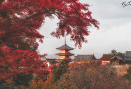

小松鼠
首页
当地玩乐
旅游攻略
吃喝玩乐
订酒店
ME
登录
|
注册
有朋自远方来!
一起来一场说走就走的旅行吧
全部
旅游
目的地
酒店
旅游家专栏
西安：旧长安的画皮
西安这座曾经的13朝古都，在今天更像旧长安的画皮，城墙完整绵延，一切就像一张唐画的影印本。
胡日尔镇的美术馆
我最终从胡日尔的美术馆里带走了一幅画，画的是冬日的萨满岩，是日落时分
漫山岛
漫山岛在第二条路上，满眼都是天赋，却偏爱挥霍青山绿水，用自己的方式过小日子，即便强行拖它起来，也得不到结果。
热门游记

深秋关西枫叶狩 | 我想与你看遍秋日繁华
关于这次旅行 人之所以爱旅行，不是为了抵达目的地，而是为了享受旅途中的种种乐趣。 ——歌德 对于我来说，每一次的旅行都有着特殊的意义。旅途中的人和事，物和景，都赋予我的人生更多的意义。 其实这次枫叶季的出行也算得上是砸锅卖铁硬着头皮上了。因为上半年各方面的开支都比较大，因此老婆一直强调要勤俭节约，减少开销，尤其是杜绝再次出远门。但是！枫叶季的盛况早已在我心里扎了根，我一直在艰难的挣扎着，这时候又恰巧有摄影团发车枫叶季 日本 ，这让我更加按耐不住了，于是我一整个夏天都在日日守候着低价机票和住宿。功夫不负有心人，终于让我订到了全日空直飞往返票和 京都 站附近最中意的一家青旅，由于我要先出发跟摄影团，所以往返机票人均算下来在2300元左右，还是相当划算的，在我这一顿猛如虎的操作后，我才开始考虑该如何向老婆大人解释发生的这一切 不过我马上就不慌了，哪怕被痛揍一顿也没关系，反正等她去了肯定逃不过买买买的魔咒。 况且为了枫叶的盛况，再多的苦都值了。
行走阿里 曾向往318的年少轻狂 今拥抱219的自然风光
2016年，在读过《转山》、《藏地三部曲》，看过《第三极》后，踏入了这片屋脊 这里是神秘的 是那晚独自在广场前走过，初见布宫的神秘 是心动的，待到格桑花开时，她在丛中笑 是着迷的，山下的羊湖水像抹轻柔的蓝丝绸般纯洁的没有丝毫瑕疵 是激情的，砾石地上正上演着一场手舞足蹈的辩经 同时也是有所顾忌的 顾忌突如其来的高反 摔倒在牦牛血渍里的惊慌 面对节假日无房可住的窘迫 这就是我的第一次面对这片屋脊，虽没深入的去了解，但足以让我印象深刻